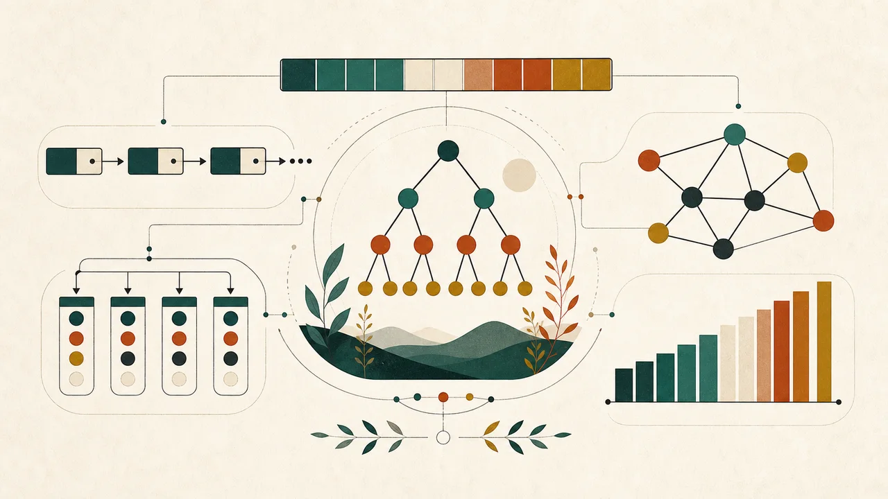
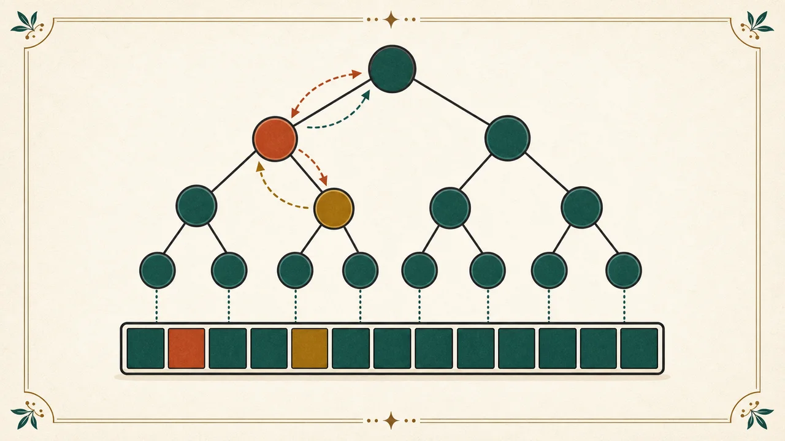
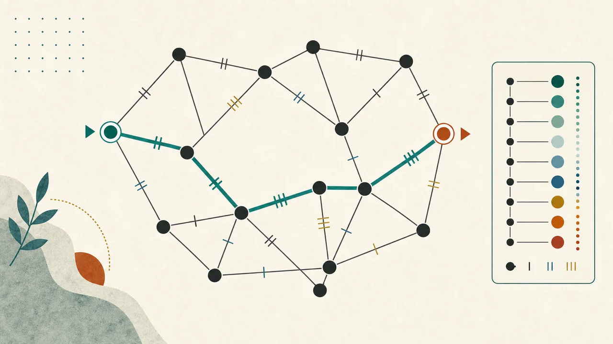
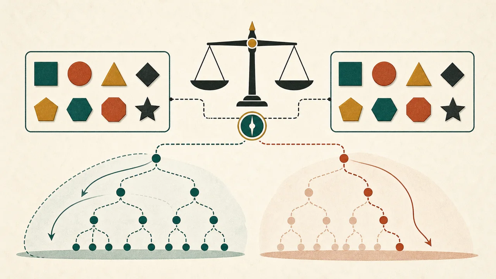
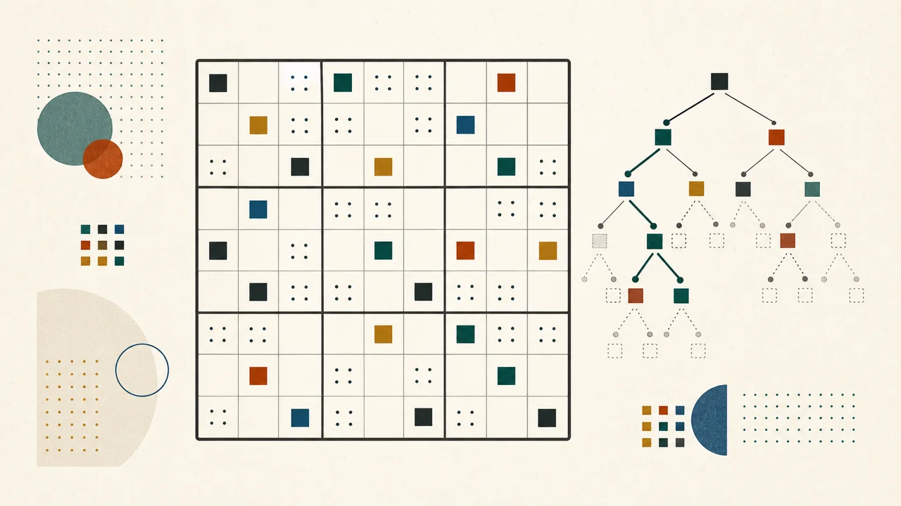
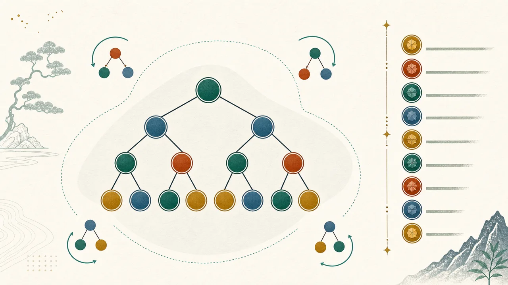
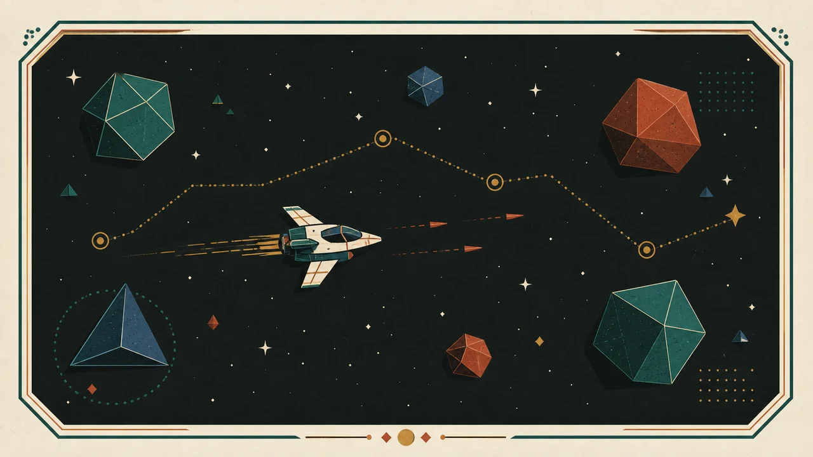
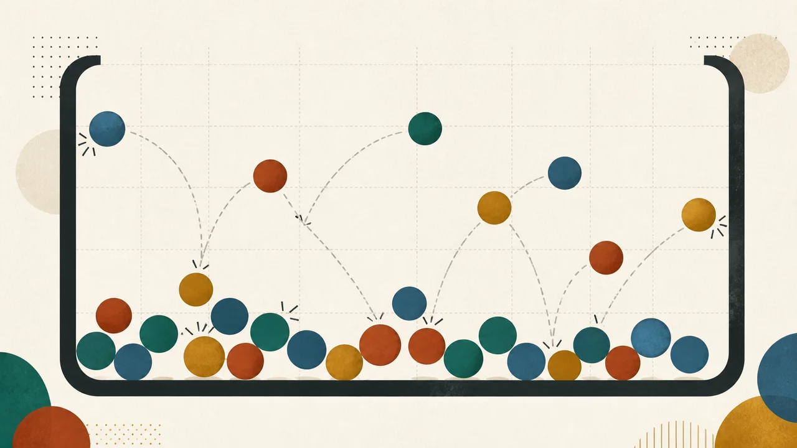

Archived portfolio workData structure visualizations
Interactive explorations of linear structures, trees, hashing, graphs, and sorting.
Open Data structure visualizationsProject archive / Earlier chapters
Before the current research focus, I built learning tools, explored algorithms, and experimented with browser games. This is a record of that work.
These projects are archived in the portfolio because they are less central to my current goals. Their original links are preserved; this page does not imply that the underlying repositories have been formally archived or that every demo is actively maintained.
Back to current workLearning by building

Archived portfolio workInteractive explorations of linear structures, trees, hashing, graphs, and sorting.
Open Data structure visualizations
Archived portfolio workA browser demonstration of heap operations and structure.
Open Binary heap visualizer
Archived portfolio workInteractive graph and shortest-path demonstrations.
Open Graph algorithms
Archived portfolio workA comparison of exhaustive and heuristic approaches to the partition problem.
Open Partition playground
Archived portfolio workA puzzle interface exploring backtracking and constraint solving.
Open Sudoku solver
Archived portfolio workA small interactive experiment with balanced trees and rankings.
Open AVL leaderboardCreative experiments
A browser pinball-style game experiment.
Open Pegish
Archived portfolio workAn earlier arcade shooter experiment.
Open Space Rangers
Archived portfolio workA browser-based motion and physics experiment.
Open Ball pitBattleship · Rock, paper, scissors · Job scheduling · Live Look Omaha
Earlier technical work
Earlier data integration work involving ETL, relational and NoSQL sources, and warehouse modeling.
View repositoryAn earlier exploration of interval-valid approximate-nearest-neighbor retrieval with filtering.
View repository